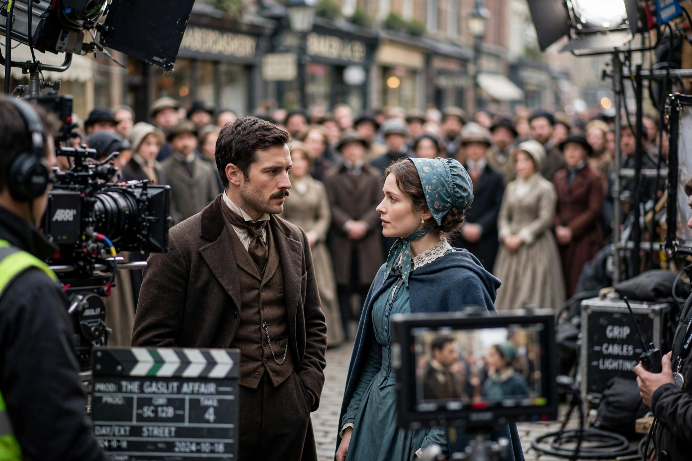

A background actor, background performer, or extra is a performer in a film, television show, stage production, or music video who appears in a non-speaking or non-singing capacity, usually in the background — for example as crowd members, passers-by, diners, or soldiers — to give scenes a sense of realism and scale.

Extras are hired through casting agencies or central casting (a system dating to 1920s Hollywood), booked by type and wardrobe, and directed mainly by assistant directors. They are instructed not to look at the camera or speak audibly (mouthing silently or murmuring 'walla'). In the US and UK many are represented by SAG-AFTRA or Equity agreements setting day rates, meal penalties, and residuals; "featured extras" get more visibility, and stand-ins and photo doubles are related but distinct roles.
Epic films used thousands of extras — Gandhi (1982) used around 300,000 for its funeral scene. Some famous actors began as extras, and a few career extras, like Jesse Heiman or Bess Flowers ('Queen of the Extras'), became notable in themselves. Digital crowd simulation (e.g., MASSIVE software in The Lord of the Rings) has supplemented, but not replaced, human extras.
Casting · Stand-in · SAG-AFTRA
Recreated from memory.